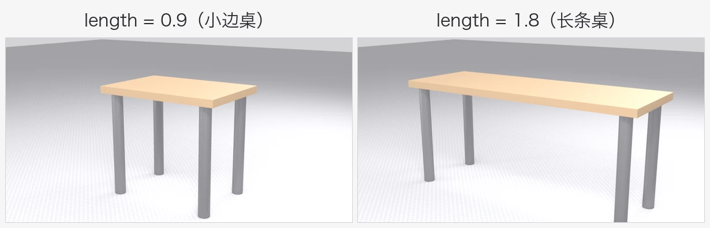
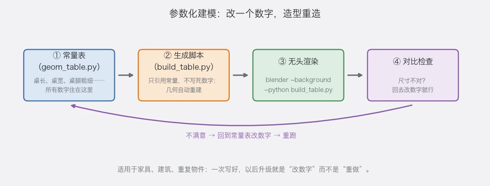

第 8 章 进阶：Python 参数化建模——改一个数字，造型重造
场景：你做好一张桌子，朋友说“想要 1.8 米的长条版”。手捏党熬夜重画；参数化党改了 1 个数字，10 秒后新桌子出炉。这一章带你摸到“自动化”的门槛——放心，只用最基础的几行代码。
学完你会
- 明白“参数化”是什么、什么时候值得用；
- 在 Blender 里运行你的第一段脚本；
- 学会“常量表 + 生成脚本”的简单工作法；
- 知道“无头渲染”是怎么回事（了解即可，不强求会用）。
核心概念：什么是“参数化”
参数化 = 把尺寸变成数字，让程序按数字干活。
先看效果——下面两张图来自同一段脚本，唯一改动是“桌长”这一个数字（0.9 → 1.8）：

图 56 数字变了，桌子自动“长”出来了——这就是参数化
什么时候值得用参数化？
| 值得用 | 不值得用 |
|---|---|
| 尺寸驱动的东西：家具、建筑、零件 | 雕刻类角色、动物（手捏更自然） |
| 要反复调尺寸的作品（改一版、再改一版） | 一次就完事的小物件（顺手捏更快） |
| 想一次生成好几种变体（加长版、矮版、宽版） | 高度艺术化的造型 |
跟着做 1：让 Blender 跑起第一段脚本
Blender 里自带 Python 编程环境，不用装任何额外软件。
- 打开 Blender，把顶部工作区标签切到 Scripting（脚本）；
- 在中间的大文本框里，粘贴下面这段（直接抄）：
import bpy
count = 6 # 柱子数量
spacing = 0.6 # 柱子间距（米）
height = 0.9 # 柱子高度（米）
for i in range(count):
bpy.ops.mesh.primitive_cube_add(
size=1,
location=(i * spacing, 0, height / 2),
scale=(0.12, 0.12, height),
)
print("生成完毕：", count, "根柱子")
- 点击文本框上面的运行脚本按钮（或按
Alt+P）； - 回到 Layout 工作区看一眼——6 根柱子整整齐齐地站在那里。
代码其实就三句人话：
import bpy：引入 Blender 的“操作接口”，脚本的第一行永远长这样；bpy.ops.mesh.primitive_cube_add(...)：就是“添加立方体”这个动作的代码版，和Shift+A做的事一模一样；for i in range(count):：把下面的动作重复count次，每次位置往后挪一点。
💡 看出来了吗？写脚本就是把“你手动输入的数值”变成“纸面上的数字”。就这么简单。
跟着做 2：改数字，再看变化
回到那段代码，把第一行改成：
count = 12 # 试试 12 根
spacing = 0.35 # 间距也调小
再运行一次（先 Ctrl+Z 撤销上一批柱子）。同样的代码，数字一改，结果立刻不一样——你已经在做参数化了。
跟着做 3：常量表 + 生成脚本——正经项目的做法
真正做项目时，把代码分成两个文件：
文件 1：geom_table.py（常量表，只放数字）
TABLE_LENGTH = 0.9 # 桌长
TABLE_WIDTH = 0.62 # 桌宽
TOP_THICK = 0.05 # 桌面厚度
LEG_HEIGHT = 0.75 # 桌腿高度
LEG_RADIUS = 0.04 # 桌腿粗细
文件 2：build_table.py（生成脚本，只引用数字）
import bpy
from geom_table import * # 把常量表里的数字全部引进来
# 桌面
bpy.ops.mesh.primitive_cube_add(
size=1, location=(0, 0, LEG_HEIGHT + TOP_THICK / 2),
scale=(TABLE_LENGTH, TABLE_WIDTH, TOP_THICK),
)
# 四条桌腿（循环生成，位置根据桌长自动算）
for sx in (-1, 1):
for sy in (-1, 1):
bpy.ops.mesh.primitive_cylinder_add(
radius=LEG_RADIUS, depth=LEG_HEIGHT,
location=(sx * (TABLE_LENGTH / 2 - 0.09),
sy * (TABLE_WIDTH / 2 - 0.07),
LEG_HEIGHT / 2),
)
print("桌子生成完毕！桌长 =", TABLE_LENGTH)
【跟着做】
- 把两段代码分别存成两个文件（
geom_table.py和build_table.py），放在同一个文件夹； - 在 Scripting 工作区用“文本 → 打开”载入
build_table.py，运行——一张小桌出现； - 只改常量表里的
TABLE_LENGTH（0.9 → 1.8），重新运行——桌子自动变成 1.8 米长条版。
💡 如果运行报错 No module named 'geom_table'：在 build_table.py 最上面补两行——import sys 和 sys.path.append("存放这两个文件的文件夹路径")，告诉 Blender 去哪里找常量表。
💡 这就是参数化的全部秘密：改数字的地方只有一处（常量表），其余全部自动。项目越大，这个习惯越值钱。
把整个流程串起来，就是一张图：

图 57 图示：常量表 → 生成脚本 → 无头渲染 → 对比检查，不满意就回去改数字再跑一遍
了解一下：无头渲染
“无头（headless）渲染” = 不打开 Blender 界面，用命令行直接出图。适合“一次渲染 8 个视角”这类批量活儿：
blender --background --python build_table.py # 不进界面，直接跑脚本
你不需要马上学会它，只要知道有这么一回事：参数化 + 无头渲染，就是“批量生成模型和图片”的组合拳。感兴趣的话，等前面的内容都用熟了再回来研究，不必现在啃。
新手常见坑
| 坑 | 说明 | 对策 |
|---|---|---|
| 脚本运行了，“什么都没发生” | 物体加在了视线外 | 按 Home 全览视角找找 |
红色报错 SyntaxError |
用了中文标点，或缩进乱 | 代码里只用英文标点；缩进用 4 个空格 |
| 上一批柱子还在，又叠了一批 | 脚本是“继续添加”，不是“重来” | 先 Ctrl+Z 撤销，或新建场景再跑 |
| 想调参数找不到数字 | 数字散落在代码各处 | 学“跟着做 3”，把所有数字集中到常量表 |
过关标准
- 我能说出脚本的“三段式”：参数写顶部 → 循环管重复 → 命令干实事；
- 我成功加载并运行过一次脚本，跑出了图形（或模型）；
- 我改过脚本里的一个数字，重跑看到结果变了。
自检题
- 哪类东西值得参数化？举两个例子。
- “常量表 + 生成脚本”的两个文件各管什么？
for i in range(count):这行代码是什么意思？- 无头渲染适合什么场景？
答案见文末。
自检题答案
- 尺寸驱动、需要反复调整的东西，如家具、建筑、机械零件（答案合理即可）。
- 常量表只管放数字（一处修改全局生效）；生成脚本只管按数字干活，不写死尺寸。
- 把它下面的动作重复执行
count次，每次变量i从 0 数到count-1，可用来错开位置。 - 批量任务：一次跑很多个视角/很多个变体，不开界面自动出图。
小结
- 参数化 = 尺寸变数字，程序按数字干活；适合家具、建筑、反复调尺寸的项目。
- Blender 里切到 Scripting 工作区就能写脚本；
bpy.ops就是“操作的代码版”。 - 常量表 + 生成脚本是正经项目的骨架：数字住一起，逻辑管自动。
- 无头渲染 = 批量出图的后门，先知道、后使用。